- Módulo: Fundamentos de Hardware
- Título del trabajo Raspberry Pi
- Componentes del grupo: Iván José Hernández Regalado
- Curso Académico: 2013/2014
- Fecha de entrega: 31 de Mayo de 2014
Vamos a la página oficial de la Raspberry para descargar un sistema operativo.

Nos descargamos el programa Win32DiskImager para pasar la iso a la SD y que la Raspberry la ejecute.
Luego ejecutamos el programa y ponemos la SD en el adaptador SD-USB para que el programa nos convierta la SD en un boteable con la iso dentro.
 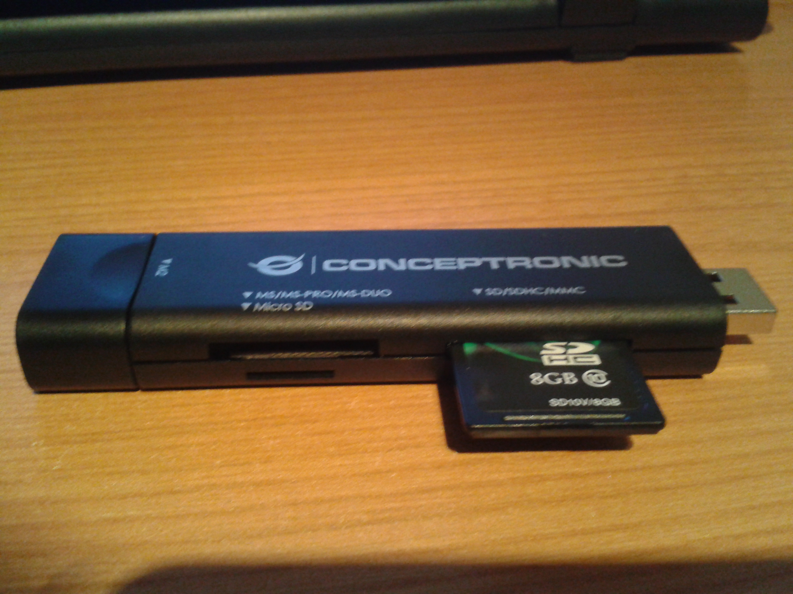
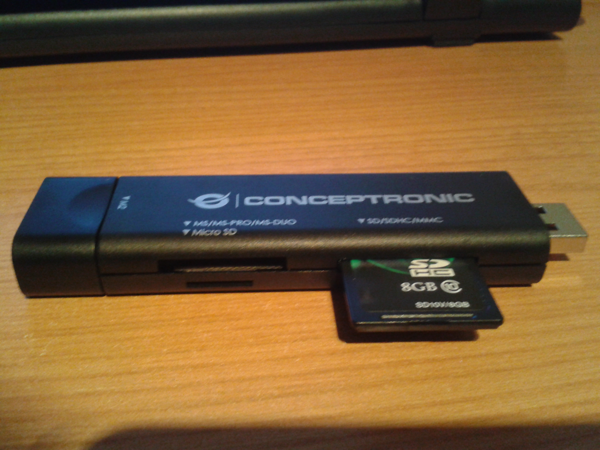Empezamos poniendo la Raspberry con su carcasa.
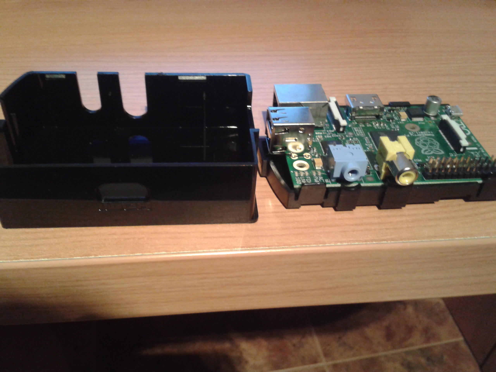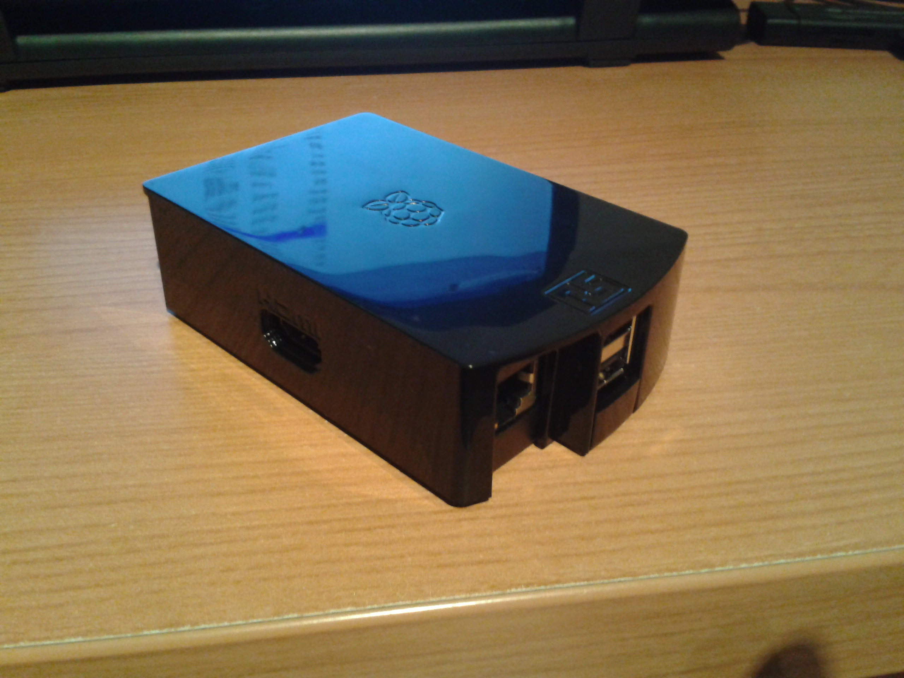Luego la conectamos a la tele mediante el cable HDMI, la conectamos a la corriente, le ponemos la SD, un teclado y ratón USB.
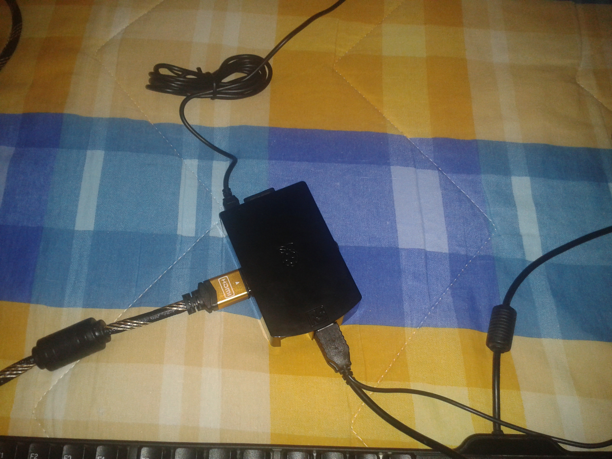Para empezar entramos como root y la contraseña root para configurar el sistema operativo y ejecutamos el comando "mv /boot/config.txt /boot/config.old" y "reboot".
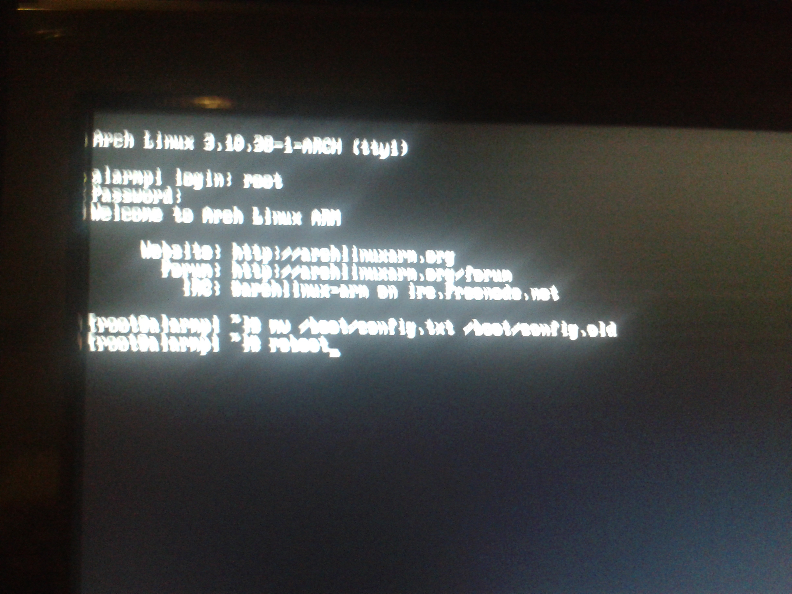Luego le cambiamos la contraseña al root.
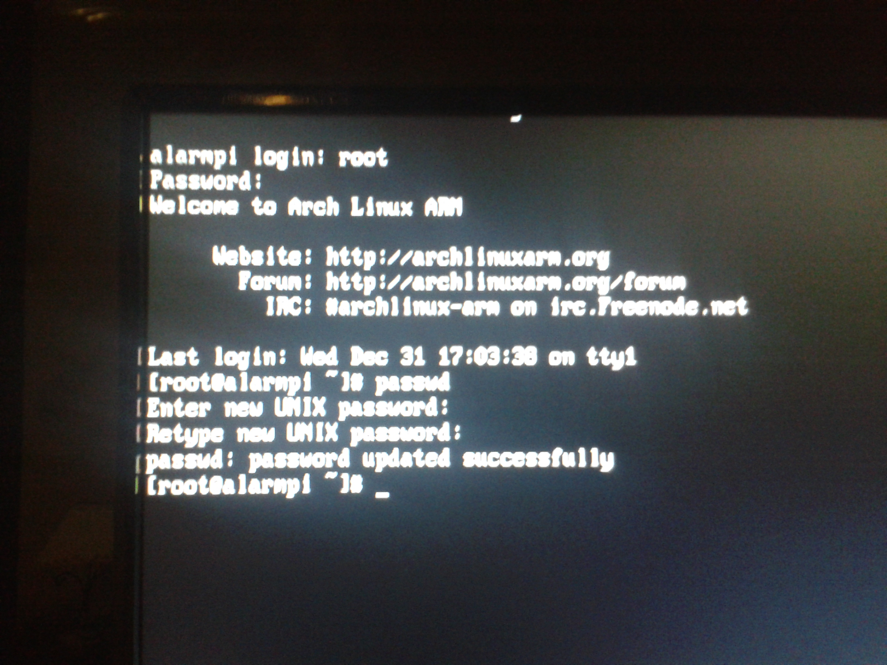Buscamos nuestra zona horaria y hacemos un link simbolico en /etc/localtime.
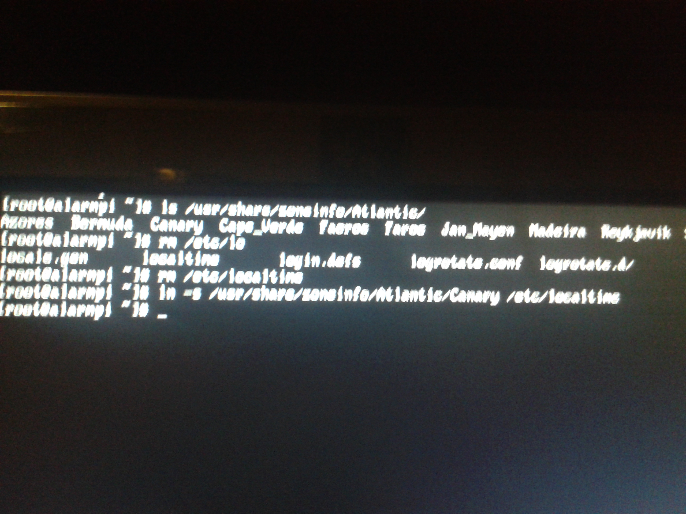Miramos como está organizado nuestro sistema.
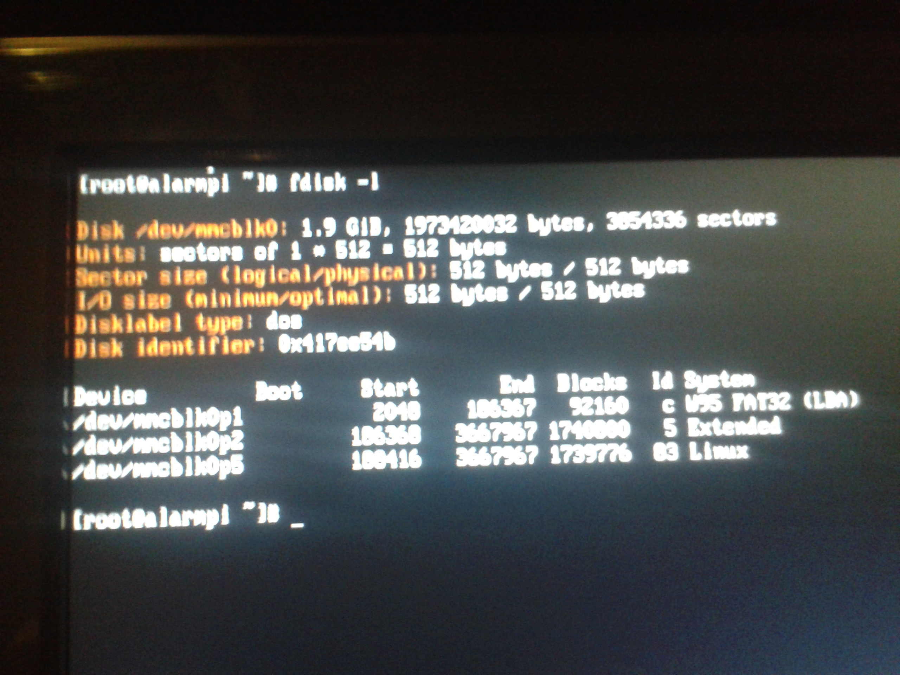Creamos pacman que es nuestro actualizador con los siguientes comandos.
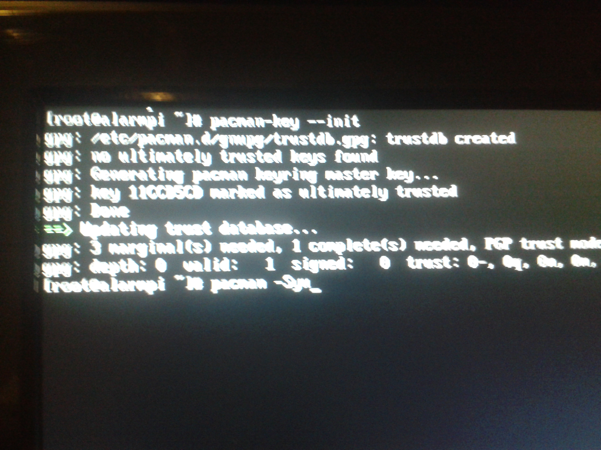Creamos un usuario llamado pi con contraseña profesor.
 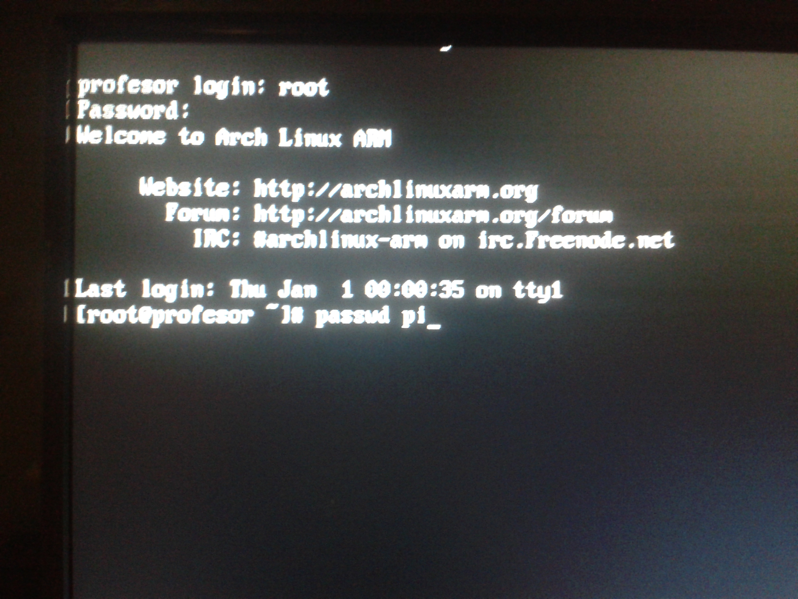
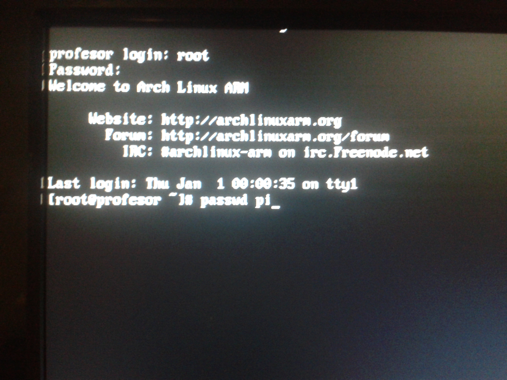Por último miramos la MAC de nuestra Raspberry y la apuntamos en la carcasa.
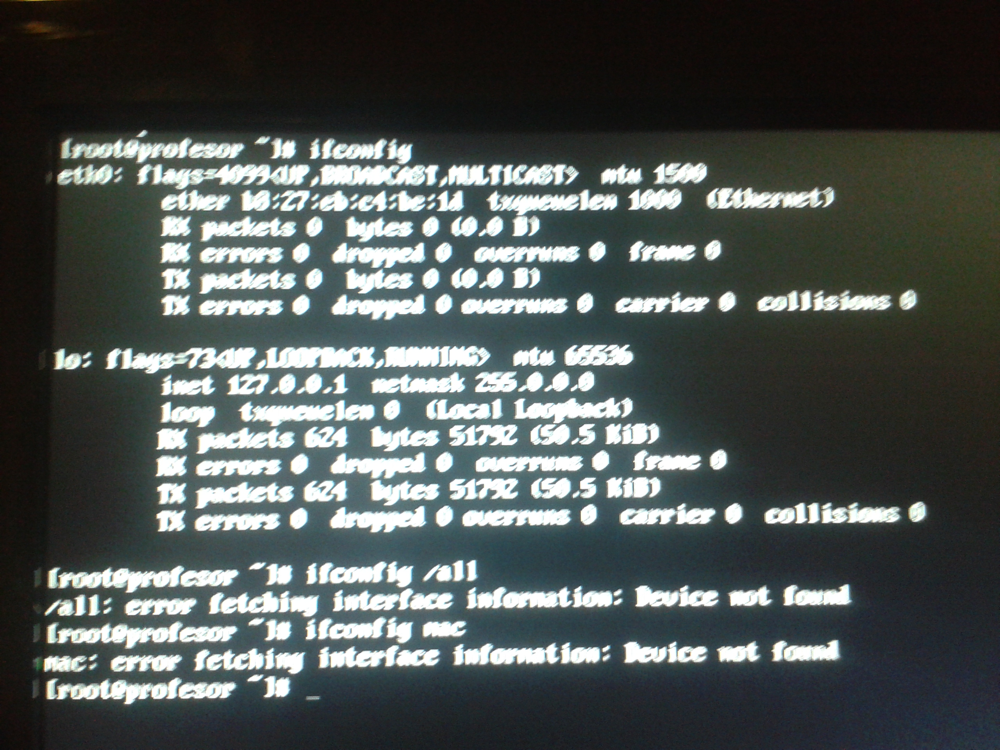